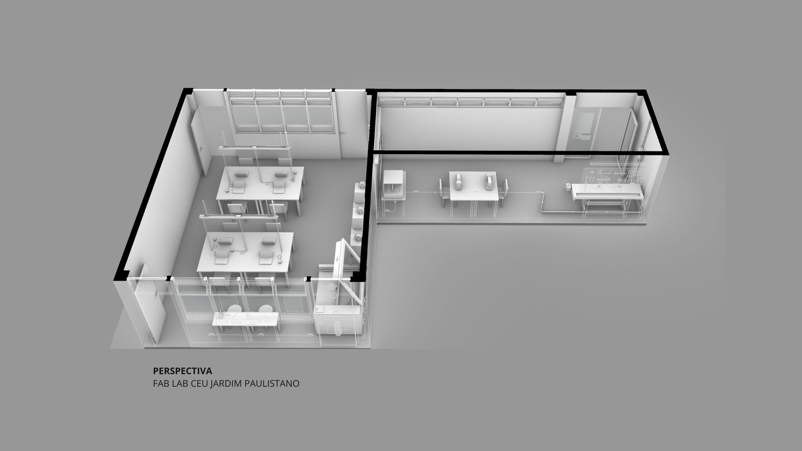
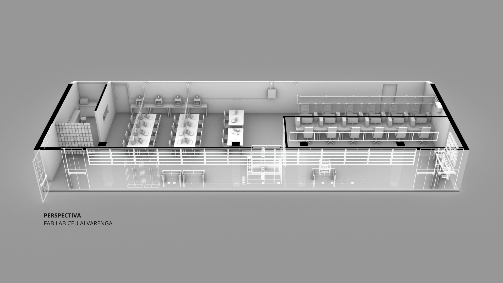
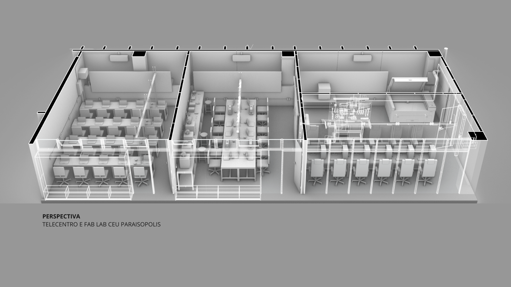
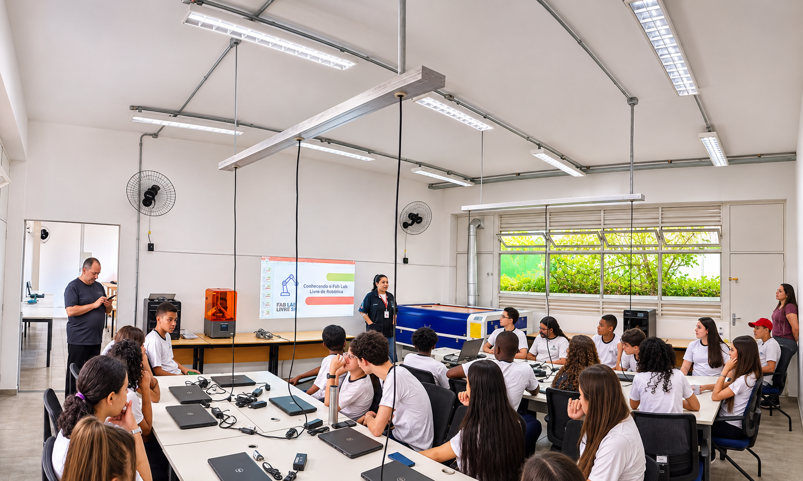
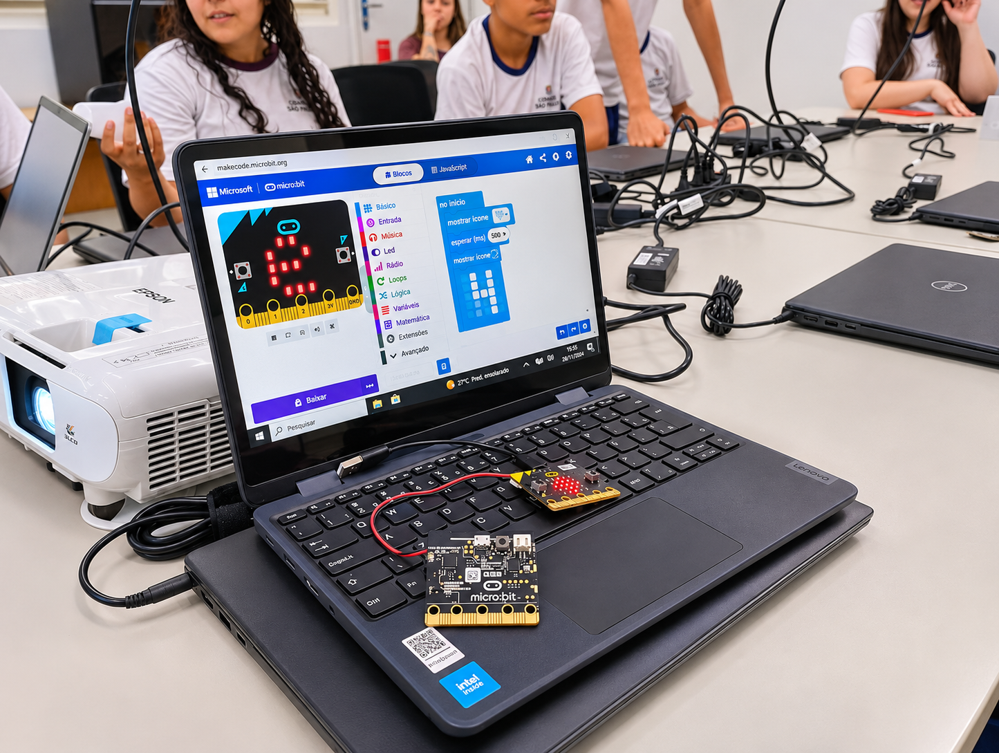
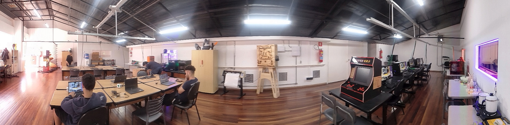
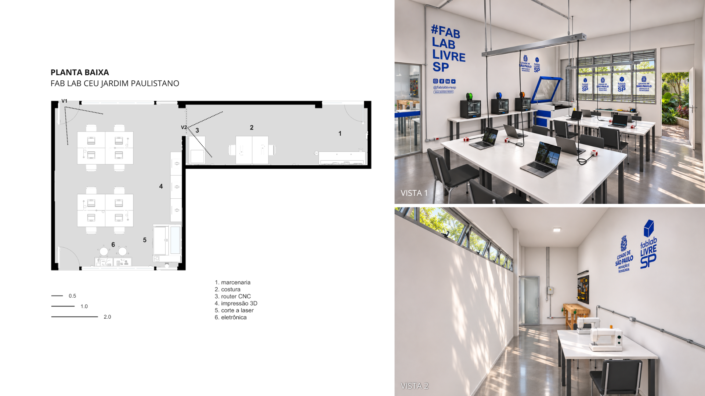
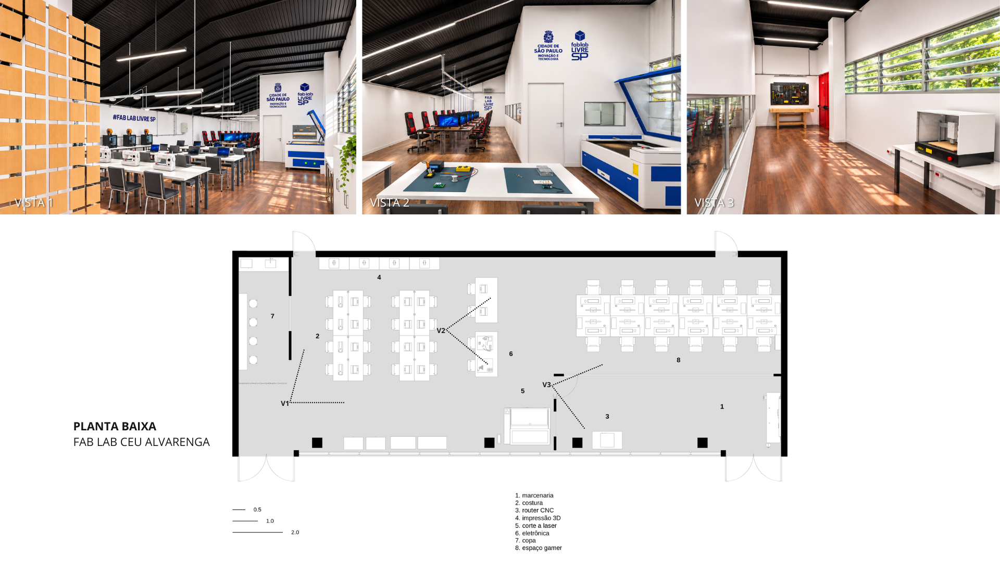
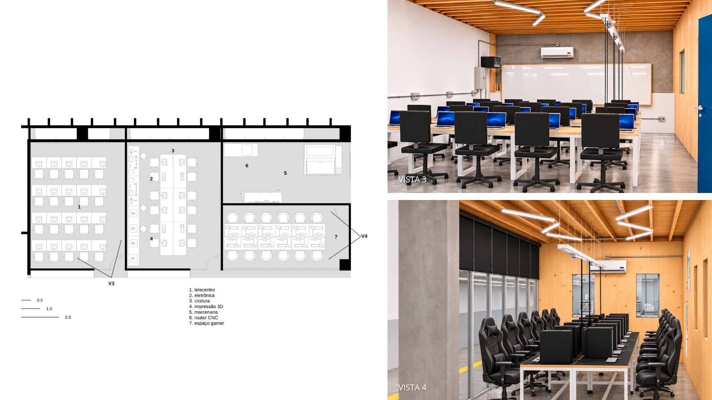
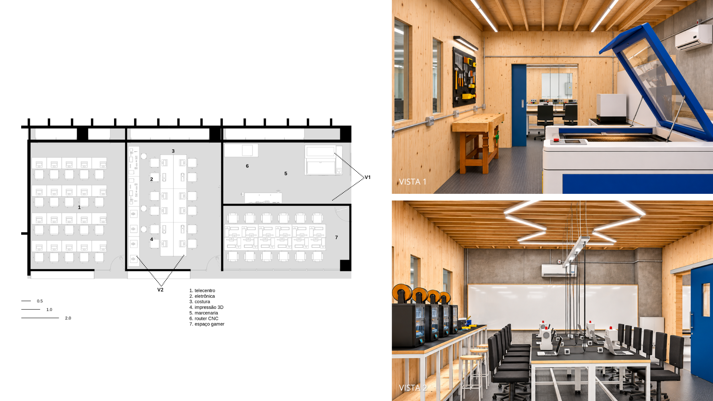

Implantação de novas unidades da rede Fab Lab Livre SP
Projetos de arquitetura para as novas unidades da rede Fab Lab Livre SP inauguradas entre 2024 e 2025. Para os projetos, foi realizado o acompanhamento de obra, análise do cronogramas físico-financeiros e coordenação logística de mobiliários e equipamentos.











- Categoria
- Projeto arquitetônico e gerenciamento de obra
- Ano
- 2024-25
- Ferramentas
- Rhinoceros · CAD · ChatGPT
- Status
- Executado